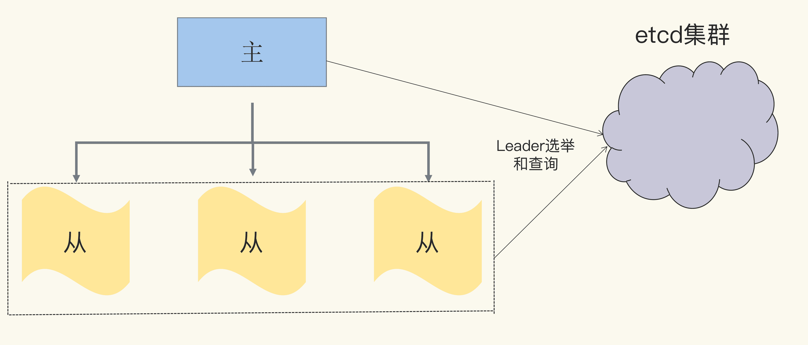
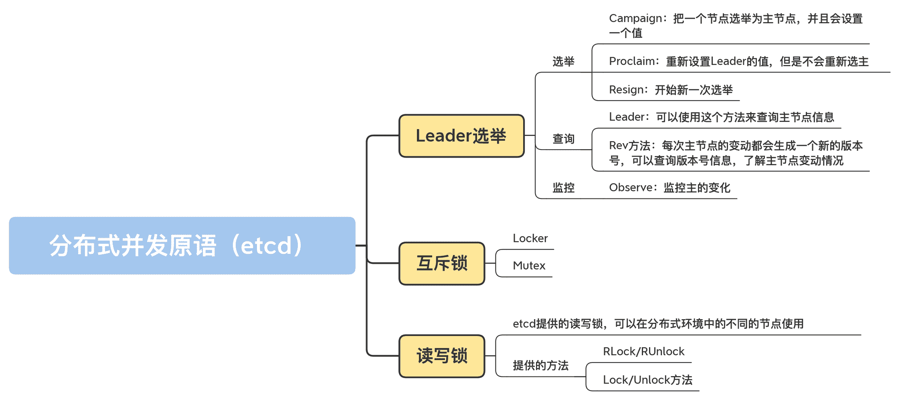

19 | 在分佈式環境中，Leader選舉、互斥鎖和讀寫鎖該如何實現？
你好，我是鳥窩。
在前面的課程裡，我們學習的併發原語都是在進程內使用的，也就是我們常見的一個運行程序為了控制共享資源、實現任務編排和進行消息傳遞而提供的控制類型。在接下來的這兩節課裡，我要講的是幾個分佈式的併發原語，它們控制的資源或編排的任務分佈在不同進程、不同機器上。
分佈式的併發原語實現更加複雜，因為在分佈式環境中，網絡狀況、服務狀態都是不可控的。不過還好有相應的軟件系統去做這些事情。這些軟件系統會專門去處理這些節點之間的協調和異常情況，並且保證數據的一致性。我們要做的就是在它們的基礎上實現我們的業務。
常用來做協調工作的軟件系統是 Zookeeper、etcd、Consul 之類的軟件，Zookeeper 為 Java 生態群提供了豐富的分佈式併發原語（通過 Curator 庫），但是缺少 Go 相關的併發原語庫。Consul 在提供分佈式併發原語這件事兒上不是很積極，而 etcd 就提供了非常好的分佈式併發原語，比如分佈式互斥鎖、分佈式讀寫鎖、Leader 選舉，等等。所以，今天，我就以 etcd 為基礎，給你介紹幾種分佈式併發原語。
既然我們依賴 etcd，那麼，在生產環境中要有一個 etcd 集群，而且應該保證這個 etcd 集群是 7*24 工作的。在學習過程中，你可以使用一個 etcd 節點進行測試。
這節課我要介紹的就是 Leader 選舉、互斥鎖和讀寫鎖。
Leader 選舉
Leader 選舉常常用在主從架構的系統中。主從架構中的服務節點分為主（Leader、Master）和從（Follower、Slave）兩種角色，實際節點包括 1 主 n 從，一共是 n+1 個節點。
主節點常常執行寫操作，從節點常常執行讀操作，如果讀寫都在主節點，從節點只是提供一個備份功能的話，那麼，主從架構就會退化成主備模式架構。
主從架構中最重要的是如何確定節點的角色，也就是，到底哪個節點是主，哪個節點是從？
在同一時刻，系統中不能有兩個主節點，否則，如果兩個節點都是主，都執行寫操作的話，就有可能出現數據不一致的情況，所以，我們需要一個選主機制，選擇一個節點作為主節點，這個過程就是 Leader 選舉。
當主節點宕機或者是不可用時，就需要新一輪的選舉，從其它的從節點中選擇出一個節點，讓它作為新主節點，宕機的原主節點恢復後，可以變為從節點，或者被摘掉。
我們可以通過 etcd 基礎服務來實現 leader 選舉。具體點說，我們可以將 Leader 選舉的邏輯交給 etcd 基礎服務，這樣，我們只需要把重心放在業務開發上。etcd 基礎服務可以通過多節點的方式保證 7*24 服務，所以，我們也不用擔心 Leader 選舉不可用的問題。如下圖所示：

接下來，我會給你介紹業務開發中跟 Leader 選舉相關的選舉、查詢、Leader 變動監控等功能。
我要先提醒你一句，如果你想運行我下面講到的測試代碼，就要先部署一個 etcd 的集群，或者部署一個 etcd 節點做測試。
首先，我們來實現一個測試分佈式程序的框架：它會先從命令行中讀取命令，然後再執行相應的命令。你可以打開兩個窗口，模擬不同的節點，分別執行不同的命令。
這個測試程序如下：
package main
// 導入所需的庫
import (
"bufio"
"context"
"flag"
"fmt"
"log"
"os"
"strconv"
"strings"
"github.com/coreos/etcd/clientv3"
"github.com/coreos/etcd/clientv3/concurrency"
)
// 可以設置一些參數，比如節點ID
var (
nodeID = flag.Int("id", 0, "node ID")
addr = flag.String("addr", "http://127.0.0.1:2379", "etcd addresses")
electName = flag.String("name", "my-test-elect", "election name")
)
func main() {
flag.Parse()
// 將etcd的地址解析成slice of string
endpoints := strings.Split(*addr, ",")
// 生成一個etcd的clien
cli, err := clientv3.New(clientv3.Config{Endpoints: endpoints})
if err != nil {
log.Fatal(err)
}
defer cli.Close()
// 創建session,如果程序宕機導致session斷掉，etcd能檢測到
session, err := concurrency.NewSession(cli)
defer session.Close()
// 生成一個選舉對象。下面主要使用它進行選舉和查詢等操作
// 另一個方法ResumeElection可以使用既有的leader初始化Election
e1 := concurrency.NewElection(session, *electName)
// 從命令行讀取命令
consolescanner := bufio.NewScanner(os.Stdin)
for consolescanner.Scan() {
action := consolescanner.Text()
switch action {
case "elect": // 選舉命令
go elect(e1, *electName)
case "proclaim": // 只更新leader的value
proclaim(e1, *electName)
case "resign": // 辭去leader,重新選舉
resign(e1, *electName)
case "watch": // 監控leader的變動
go watch(e1, *electName)
case "query": // 查詢當前的leader
query(e1, *electName)
case "rev":
rev(e1, *electName)
default:
fmt.Println("unknown action")
}
}
}
部署完以後，我們就可以開始選舉了。
選舉
如果你的業務集群還沒有主節點，或者主節點宕機了，你就需要發起新一輪的選主操作，主要會用到 Campaign 和 Proclaim。如果你需要主節點放棄主的角色，讓其它從節點有機會成為主節點，就可以調用 Resign 方法。
這裡我提到了三個和選主相關的方法，下面我來介紹下它們的用法。
第一個方法是 Campaign。它的作用是，把一個節點選舉為主節點，並且會設置一個值。它的簽名如下所示：
func (e *Election) Campaign(ctx context.Context, val string) error
需要注意的是，這是一個阻塞方法，在調用它的時候會被阻塞，直到滿足下面的三個條件之一，才會取消阻塞。
- 成功當選為主；
- 此方法返回錯誤；
- ctx 被取消。
第二個方法是 Proclaim。它的作用是，重新設置 Leader 的值，但是不會重新選主，這個方法會返回新值設置成功或者失敗的信息。方法簽名如下所示：
func (e *Election) Proclaim(ctx context.Context, val string) error
第三個方法是 Resign：開始新一次選舉。這個方法會返回新的選舉成功或者失敗的信息。它的簽名如下所示：
func (e *Election) Resign(ctx context.Context) (err error)
這三個方法的測試代碼如下。你可以使用測試程序進行測試，具體做法是，啟動兩個節點，執行和這三個方法相關的命令。
var count int
// 選主
func elect(e1 *concurrency.Election, electName string) {
log.Println("acampaigning for ID:", *nodeID)
// 調用Campaign方法選主,主的值為value-<主節點ID>-<count>
if err := e1.Campaign(context.Background(), fmt.Sprintf("value-%d-%d", *nodeID, count)); err != nil {
log.Println(err)
}
log.Println("campaigned for ID:", *nodeID)
count++
}
// 為主設置新值
func proclaim(e1 *concurrency.Election, electName string) {
log.Println("proclaiming for ID:", *nodeID)
// 調用Proclaim方法設置新值,新值為value-<主節點ID>-<count>
if err := e1.Proclaim(context.Background(), fmt.Sprintf("value-%d-%d", *nodeID, count)); err != nil {
log.Println(err)
}
log.Println("proclaimed for ID:", *nodeID)
count++
}
// 重新選主，有可能另外一個節點被選為了主
func resign(e1 *concurrency.Election, electName string) {
log.Println("resigning for ID:", *nodeID)
// 調用Resign重新選主
if err := e1.Resign(context.TODO()); err != nil {
log.Println(err)
}
log.Println("resigned for ID:", *nodeID)
}查詢除了選舉 Leader，程序在啟動的過程中，或者在運行的時候，還有可能需要查詢當前的主節點是哪一個節點？主節點的值是什麼？版本是多少？不光是主從節點需要查詢和知道哪一個節點，在分佈式系統中，還有其它一些節點也需要知道集群中的哪一個節點是主節點，哪一個節點是從節點，這樣它們才能把讀寫請求分別發往相應的主從節點上。
etcd 提供了查詢當前 Leader 的方法 Leader，如果當前還沒有 Leader，就返回一個錯誤，你可以使用這個方法來查詢主節點信息。這個方法的簽名如下：
func (e *Election) Leader(ctx context.Context) (*v3.GetResponse, error)
每次主節點的變動都會生成一個新的版本號，你還可以查詢版本號信息（Rev 方法），瞭解主節點變動情況：
func (e *Election) Rev() int64
你可以在測試完選主命令後，測試查詢命令（query、rev），代碼如下：
// 查詢主的信息
func query(e1 *concurrency.Election, electName string) {
// 調用Leader返回主的信息，包括key和value等信息
resp, err := e1.Leader(context.Background())
if err != nil {
log.Printf("failed to get the current leader: %v", err)
}
log.Println("current leader:", string(resp.Kvs[0].Key), string(resp.Kvs[0].Value))
}
// 可以直接查詢主的rev信息
func rev(e1 *concurrency.Election, electName string) {
rev := e1.Rev()
log.Println("current rev:", rev)
}監控有了選舉和查詢方法，我們還需要一個監控方法。畢竟，如果主節點變化了，我們需要得到最新的主節點信息。
我們可以通過 Observe 來監控主的變化，它的簽名如下：
func (e *Election) Observe(ctx context.Context) <-chan v3.GetResponse
它會返回一個 chan，顯示主節點的變動信息。需要注意的是，它不會返回主節點的全部歷史變動信息，而是隻返回最近的一條變動信息以及之後的變動信息。
它的測試代碼如下：
func watch(e1 *concurrency.Election, electName string) {
ch := e1.Observe(context.TODO())
log.Println("start to watch for ID:", *nodeID)
for i := 0; i < 10; i++ {
resp := <-ch
log.Println("leader changed to", string(resp.Kvs[0].Key), string(resp.Kvs[0].Value))
}
}
etcd 提供了選主的邏輯，而你要做的就是利用這些方法，讓它們為你的業務服務。在使用的過程中，你還需要做一些額外的設置，比如查詢當前的主節點、啟動一個 goroutine 阻塞調用 Campaign 方法，等等。雖然你需要做一些額外的工作，但是跟自己實現一個分佈式的選主邏輯相比，大大地減少了工作量。
接下來，我們繼續看 etcd 提供的分佈式併發原語：互斥鎖。
互斥鎖
互斥鎖是非常常用的一種併發原語，我專門花了 4 講的時間，重點介紹了互斥鎖的功能、原理和易錯場景。
不過，前面說的互斥鎖都是用來保護同一進程內的共享資源的，今天，我們要掌握的是分佈式環境中的互斥鎖。我們要重點學習下分佈在不同機器中的不同進程內的 goroutine，如何利用分佈式互斥鎖來保護共享資源。
互斥鎖的應用場景和主從架構的應用場景不太一樣。使用互斥鎖的不同節點是沒有主從這樣的角色的，所有的節點都是一樣的，只不過在同一時刻，只允許其中的一個節點持有鎖。
下面，我們就來學習下互斥鎖相關的兩個原語，即 Locker 和 Mutex。
Locker
etcd 提供了一個簡單的 Locker 原語，它類似於 Go 標準庫中的 sync.Locker 接口，也提供了 Lock/UnLock 的機制：
func NewLocker(s *Session, pfx string) sync.Locker
可以看到，它的返回值是一個 sync.Locker，因為你對標準庫的 Locker 已經非常瞭解了，而且它只有 Lock/Unlock 兩個方法，所以，接下來使用這個鎖就非常容易了。下面的代碼是一個使用 Locker 併發原語的例子：
package main
import (
"flag"
"log"
"math/rand"
"strings"
"time"
"github.com/coreos/etcd/clientv3"
"github.com/coreos/etcd/clientv3/concurrency"
)
var (
addr = flag.String("addr", "http://127.0.0.1:2379", "etcd addresses")
lockName = flag.String("name", "my-test-lock", "lock name")
)
func main() {
flag.Parse()
rand.Seed(time.Now().UnixNano())
// etcd地址
endpoints := strings.Split(*addr, ",")
// 生成一個etcd client
cli, err := clientv3.New(clientv3.Config{Endpoints: endpoints})
if err != nil {
log.Fatal(err)
}
defer cli.Close()
useLock(cli) // 測試鎖
}
func useLock(cli *clientv3.Client) {
// 為鎖生成session
s1, err := concurrency.NewSession(cli)
if err != nil {
log.Fatal(err)
}
defer s1.Close()
//得到一個分佈式鎖
locker := concurrency.NewLocker(s1, *lockName)
// 請求鎖
log.Println("acquiring lock")
locker.Lock()
log.Println("acquired lock")
// 等待一段時間
time.Sleep(time.Duration(rand.Intn(30)) * time.Second)
locker.Unlock() // 釋放鎖
log.Println("released lock")
}
你可以同時在兩個終端中運行這個測試程序。可以看到，它們獲得鎖是有先後順序的，一個節點釋放了鎖之後，另外一個節點才能獲取到這個分佈式鎖。
Mutex
事實上，剛剛說的 Locker 是基於 Mutex 實現的，只不過，Mutex 提供了查詢 Mutex 的 key 的信息的功能。測試代碼也類似：
func useMutex(cli *clientv3.Client) {
// 為鎖生成session
s1, err := concurrency.NewSession(cli)
if err != nil {
log.Fatal(err)
}
defer s1.Close()
m1 := concurrency.NewMutex(s1, *lockName)
//在請求鎖之前查詢key
log.Printf("before acquiring. key: %s", m1.Key())
// 請求鎖
log.Println("acquiring lock")
if err := m1.Lock(context.TODO()); err != nil {
log.Fatal(err)
}
log.Printf("acquired lock. key: %s", m1.Key())
//等待一段時間
time.Sleep(time.Duration(rand.Intn(30)) * time.Second)
// 釋放鎖
if err := m1.Unlock(context.TODO()); err != nil {
log.Fatal(err)
}
log.Println("released lock")
}
可以看到，Mutex 並沒有實現 sync.Locker 接口，它的 Lock/Unlock 方法需要提供一個 context.Context 實例做參數，這也就意味著，在請求鎖的時候，你可以設置超時時間，或者主動取消請求。
讀寫鎖
學完了分佈式 Locker 和互斥鎖 Mutex，你肯定會聯想到讀寫鎖 RWMutex。是的，etcd 也提供了分佈式的讀寫鎖。不過，互斥鎖 Mutex 是在 github.com/coreos/etcd/clientv3/concurrency 包中提供的，讀寫鎖 RWMutex 卻是在 github.com/coreos/etcd/contrib/recipes 包中提供的。
etcd 提供的分佈式讀寫鎖的功能和標準庫的讀寫鎖的功能是一樣的。只不過，etcd 提供的讀寫鎖，可以在分佈式環境中的不同的節點使用。它提供的方法也和標準庫中的讀寫鎖的方法一致，分別提供了 RLock/RUnlock、Lock/Unlock 方法。下面的代碼是使用讀寫鎖的例子，它從命令行中讀取命令，執行讀寫鎖的操作：
package main
import (
"bufio"
"flag"
"fmt"
"log"
"math/rand"
"os"
"strings"
"time"
"github.com/coreos/etcd/clientv3"
"github.com/coreos/etcd/clientv3/concurrency"
recipe "github.com/coreos/etcd/contrib/recipes"
)
var (
addr = flag.String("addr", "http://127.0.0.1:2379", "etcd addresses")
lockName = flag.String("name", "my-test-lock", "lock name")
action = flag.String("rw", "w", "r means acquiring read lock, w means acquiring write lock")
)
func main() {
flag.Parse()
rand.Seed(time.Now().UnixNano())
// 解析etcd地址
endpoints := strings.Split(*addr, ",")
// 創建etcd的client
cli, err := clientv3.New(clientv3.Config{Endpoints: endpoints})
if err != nil {
log.Fatal(err)
}
defer cli.Close()
// 創建session
s1, err := concurrency.NewSession(cli)
if err != nil {
log.Fatal(err)
}
defer s1.Close()
m1 := recipe.NewRWMutex(s1, *lockName)
// 從命令行讀取命令
consolescanner := bufio.NewScanner(os.Stdin)
for consolescanner.Scan() {
action := consolescanner.Text()
switch action {
case "w": // 請求寫鎖
testWriteLocker(m1)
case "r": // 請求讀鎖
testReadLocker(m1)
default:
fmt.Println("unknown action")
}
}
}
func testWriteLocker(m1 *recipe.RWMutex) {
// 請求寫鎖
log.Println("acquiring write lock")
if err := m1.Lock(); err != nil {
log.Fatal(err)
}
log.Println("acquired write lock")
// 等待一段時間
time.Sleep(time.Duration(rand.Intn(10)) * time.Second)
// 釋放寫鎖
if err := m1.Unlock(); err != nil {
log.Fatal(err)
}
log.Println("released write lock")
}
func testReadLocker(m1 *recipe.RWMutex) {
// 請求讀鎖
log.Println("acquiring read lock")
if err := m1.RLock(); err != nil {
log.Fatal(err)
}
log.Println("acquired read lock")
// 等待一段時間
time.Sleep(time.Duration(rand.Intn(10)) * time.Second)
// 釋放寫鎖
if err := m1.RUnlock(); err != nil {
log.Fatal(err)
}
log.Println("released read lock")
}總結自己實現分佈式環境的併發原語，是相當困難的一件事，因為你需要考慮網絡的延遲和異常、節點的可用性、數據的一致性等多種情況。
所以，我們可以藉助 etcd 這樣成熟的框架，基於它提供的分佈式併發原語處理分佈式的場景。需要注意的是，在使用這些分佈式併發原語的時候，你需要考慮異常的情況，比如網絡斷掉等。同時，分佈式併發原語需要網絡之間的通訊，所以會比使用標準庫中的併發原語耗時更長。

好了，這節課就到這裡，下節課，我會帶你繼續學習其它的分佈式併發原語，包括隊列、柵欄和 STM，敬請期待。
思考題
- 如果持有互斥鎖或者讀寫鎖的節點意外宕機了，它持有的鎖會不會被釋放？
- etcd 提供的讀寫鎖中的讀和寫有沒有優先級？
歡迎在留言區寫下你的思考和答案，我們一起交流討論。如果你覺得有所收穫，也歡迎你把今天的內容分享給你的朋友或同事。